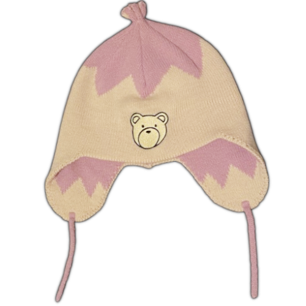

ANGELtype (not to be confused with the 2hu fumo one) started off as an LA-based otaku fashion brand in 2020 and has since fazed out all of their otaku catalog by 2024, and now takes after contemporary minimalist streetwear.
this hat is now discontinued, which sucks because its one of the best replicas i've seen of the original animated hat. i bought it back when i was working on my homemade handinavi computer.